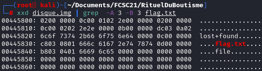

As the previous challenge, let's start with a hexdump.
xxd disque.img | grep -A 3 -B 3 FCSC
This time, this command did not display any result.
However, checking the hexdump for the string "flag.txt", we have found some results.

Information retrieved by looking at the hexdump:
inode : 00 00 00 0c = 12
03 c8 = record length = 968 bytes
08: name length
01 : type = file
name = 66 6c 61 67 2e 74 78 74 (flag.txt)
Let's mount the file to see we can retrieve the file back.
losetup /dev/loop0 ./disque.img
To know which loop device use run the command losetup -f
To mount the filesytem on the system, just run "mount" command
mount /dev/loop0 ./mountpoint
Surprisingly, the file does not exist. We will debug the filesystem using the command
debugfs.
debugfs -R "stat <12>" /dev/loop0
We are interested in the inode 12 linked to the file "flag.txt"
"dtime" indicates that there exists an event deleting the file from the file system.
Let's see if we can retrieve the deleted file, we need to know the file system type, to do so we can use the command
fsck.
fsck -N /dev/loop0
Now we know that the file system type is ext4. A tool called, ext4magic can recover partially deleted file from ext file system.
ext4magic /dev/loop0 -M -d .
The destination folder is the current folder "./", therefore we will retrieve all the files from the filesystem, we just have to print the content of the file "flag.txt" to retrieve the file.
Alternative method:
We know that the flag always start with FCSC, if the string did not give any result, it might be because the content of the file is in binary. What if you can tell grep to process the binary content as text, we might find the flag this way.
-a, --text equivalent to --binary-files=text
The parameter "a" process the binary file as if it were a text as shown in the section help of the command grep.
xxd disque.img | grep -a F flag.txt